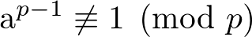

確認問題
数値
- 変数 n に 7 を代入しましょう
- 変数 n を 2 で割ってみましょう
- 変数 n を 2 で割って小数点以下切り捨ててみましょう
- 変数 n の剰余 (割ったあまり) を求めてみましょう
- 変数 n の 2 乗 (n^2) を求めてみましょう
- [応用] フェルマーテスト (Fermat primality test) を使って素数ではないことを確認してみましょう
- a と p は互いに素で以下の式を満たす場合、p は合成数である

- 例 1: a: 17, p: 49 => 22: 素数でない
- 例 2: a: 17, p: 47 => 1: 素数の可能性がある
数値 回答
>>> n = 7
>>> n / 2
3.5
>>> n // 2
3
>>> n % 2
1
>>> n ** 2
49
>>> a = 17
>>> p = 49
>>> a ** (p-1) % p
22
>>> a = 17
>>> p = 47
>>> a ** (p-1) % p
1
文字列
- 変数 s に 'Hello\nWorld!' と代入しましょう
- 変数 s を print() 関数を使って表示してみましょう
- 変数 s の長さを求めてみましょう
- [応用] 変数 s の変数 n 番目のインデックスにある文字を表示してみましょう
文字列 回答
>>> s = 'Hello\nWorld!'
>>> s = '''Hello
... World!'''
>>> print(s)
Hello
World!
>>> len(s)
12
>>> n = 6
>>> s[n]
'W'
リスト
- 変数 l に 空リスト
[] を代入しましょう
- append() メソッドを使用して、6, 1, 2 の順に追加してみましょう
- 変数 l の要素数を求めてみましょう
- 変数 l の合計を求めてみましょう
- [応用] 変数 l の平均を求めてみましょう
リスト 回答
>>> l = []
>>> l.append(6)
>>> l.append(2)
>>> l.append(1)
>>> l
[6, 2, 1]
>>> len(l)
3
>>> sum(l)
9
>>> sum(l) / len(l)
3
タプル
- 変数 t に 2 つの値を持つのタプルを代入してみましょう
- 変数 t の値を 2 つの変数 a, b に一度に代入してみましょう
- 変数 t に 1 要素のタプルを代入してみましょう
タプル 回答
>>> t = (2, 3)
>>> a, b = t
>>> a
2
>>> b
3
>>> t = (6, )
辞書
- 変数 d に a: apple, b: banana, c: cherry (key: value の表記) の辞書を代入してみましょう
- 変数 d に対して key 'b' を使って value を取得してみましょう
- 変数 d に対して get() メソッドを使って key 'b' に対する value を取得してみましょう
- 変数 d に key d が含まれないことを確認してみましょう
- 変数 d に value durian が含まれないことを確認してみましょう
- 変数 d に d: durian を追加してみましょう
- 4., 5. をもう一度確認し、d: durian が含まれることを確認してみましょう
- 変数 d に対して、get() メソッドで取得しようとした際に、value が見つからない場合に
'not found' を取得できるようにしてみましょう
辞書 回答
>>> d = {'a': 'apple', 'b': 'banana', 'c': 'cherry'}
>>> d['b']
'banana'
>>> d.get('b')
'banana'
>>> 'd' in d
False
>>> 'd' in d.keys()
False
>>> 'durian' in d.values()
False
>>> d['d'] = 'durian'
>>> 'd' in d
True
>>> 'durian' in d.values()
True
>>> d.get('e', 'not found')